Horror Movies have been gaining some much needed recognition within the past year as we had some promising titles. I personally was excited to see more originality come to play rather than the same played out remakes we constantly have seen in the past. It was refreshing seeing what these directors are capable of making.
Let's look at the different subcategories:
- Body Horror
- Supernatural
- Psychological
- Slasher
Body Horror
-
The Substance
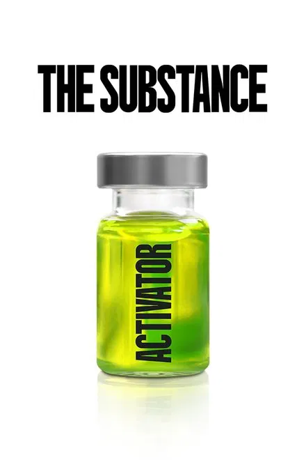The Substance was excellently made, showcasing Oscar winning make up and landing Demi Moore Critiques choice. This is a movie I would recommend to anybody even those who aren't big on horror.
Supernatural
-
Abigail
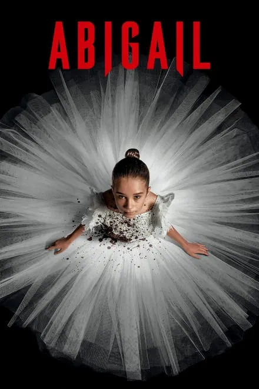Abigail felt more as a comedy than anything. Abigail herself had quite an interesting story. One of Angus Cloud's final films, he brought some comedic relief to the parts I found incredibly boring. Not a movie I would watch again
-
Evil Dead Rise
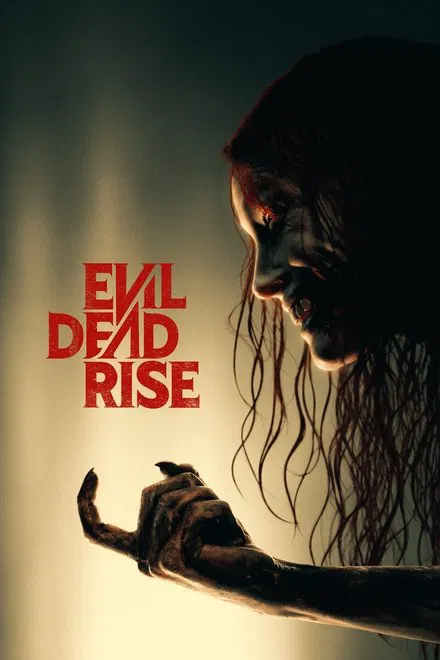Now this is a movie that will have you gripping your seat. It had some great jump scares. There were some moments where I felt the characters emotions. There is one scene in particular that hasn't left my mind.... Let's just say I cant look at a cheese grater the same way again...
-
Smile 2
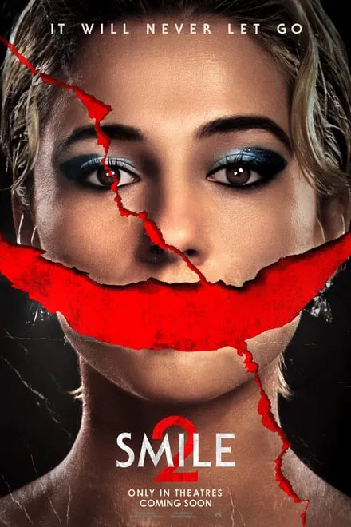Smile 2 really surprised me. I was not a huge fan of the original. I did find Smile creepy but the story just didn't hit me like the sequel. This has quickly become a "comfort" movie of mine. Noami Scott played the role well, giving the feeling we were right there with her experiencing what Skye Riley was facing. The movie's soundtrack absolutely made it into my personal playlist. Highly recommend this over the first.
-
Immaculate
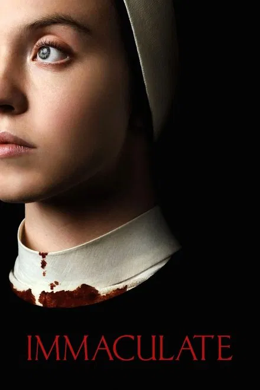Boring. Didn't really catch my attention. Personally did not think Sweeney played this horror role well. The twist at the end was interesting and unexpected.
-
The Monkey
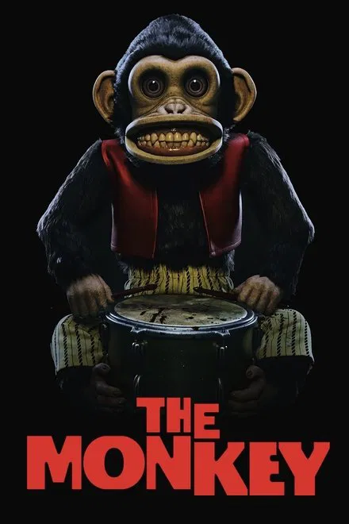Very different to say the least. Maybe a single watch kinda film. The gore wasn't too bad. Another one that felt more like a comedy than anything.
Psychological
-
Longlegs
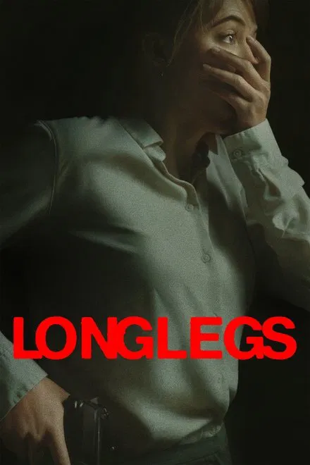Sadly, I was disappointed by this. It did not live up to its hype we saw from the trailer. The marketing for this movie had us thinking it would be one of the scariest.... Absolutely not. Nick Cage brought out an interesting character. The evil dolls were for sure the scariest element. But a cool detail you can find is the Easter egg throughout the film where you can see the devil show up. "Leeet meee in nooooow". Lol one of my favorite quotes from Longlegs himself
-
Companion
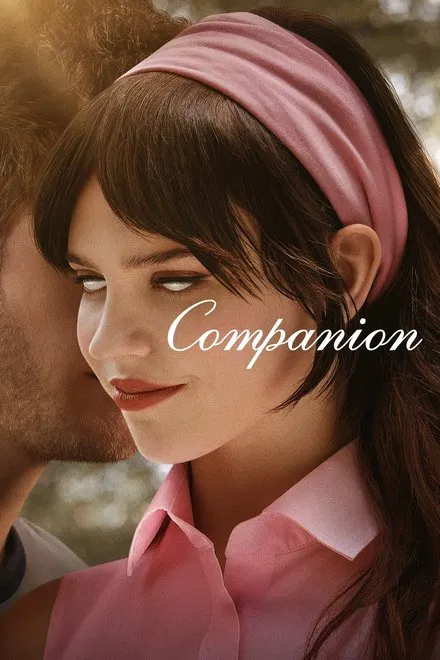Really liked this movie. For an AI sex bot, Sophie Thatcher actually had me thinking she was a sentient being. Found myself rooting for the robot in the some vain as Ex Machina. Awesome movie!!
-
Strange Darling
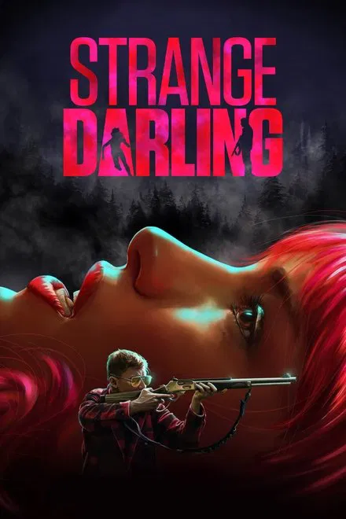Just watch it!
-
Blink Twice
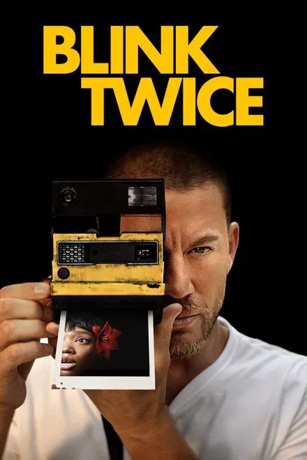If you like Dont Worry Darling, than you will love this one. It is one of those where you have to play close attention, which you wont have any problem doing so as it literally has you hooked the entire time. Tatum did amazing at being one of the most hated characters.
Slasher
-
The Strangers
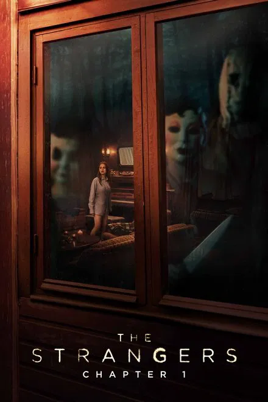The Strangers Chapter one, ooof there is nothing scarier than knowing something like this can potentially happen in reality. The original is still probably the scariest, but this will not disappoint. Totally loved feeling like I constantly need to check if my doors are locked!
-
Terrifier 3
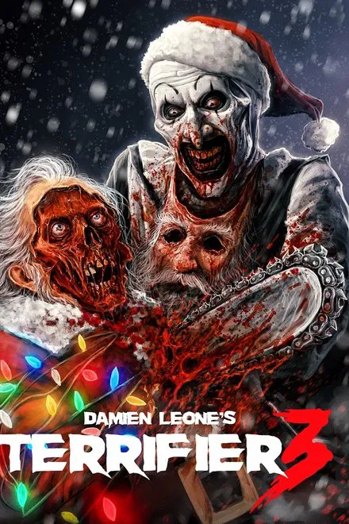I love the recognition Art the clown as been getting lately. Seeing him getting his own animatronic at spirit warmed my heart lol. Terrifier 3 is def not a movie for everyone. Some people actually left the theater during my showing after the first gore moment. I had someone say "This isn't a funny movie at all!!!!".... Well, I sure thought it was..
-
Maxxxine
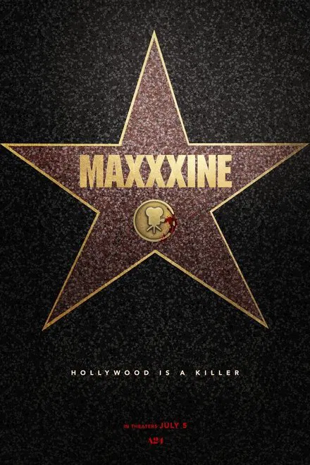Maxxxine was ok... I do like seeing the connection between X and Pearl, but this took my by surprise.